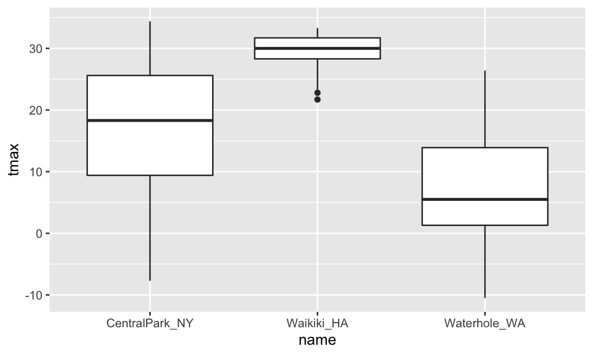

ggplot2Good visualization is a critical step in data analysis.
This is the first module in the Visualization and EDA topic.
Create effective graphics using ggplot and implement best practices for effective graphical communication.
First, I’ll create a GitHub repo + local R project for today’s work (I’m calling mine viz_and_eda). Occasionally, we’ll use the same datasets we saw in Data Wrangling I, so I’ll add sub-directory called data and put these datasets in there. Lastly I’ll start an R Markdown file for today, and load the tidyverse package in “setup” code chunk.
library(tidyverse)
library(ggridges)We’ll be working with NOAA weather data, which is downloaded using rnoaa::meteo_pull_monitors function in the code chunk below; similar code underlies the weather dataset used elsewhere in the course. Because this process can take some time, I’ll cache the code chunk.
weather_df =
rnoaa::meteo_pull_monitors(
c("USW00094728", "USC00519397", "USS0023B17S"),
var = c("PRCP", "TMIN", "TMAX"),
date_min = "2017-01-01",
date_max = "2017-12-31") %>%
mutate(
name = recode(
id,
USW00094728 = "CentralPark_NY",
USC00519397 = "Waikiki_HA",
USS0023B17S = "Waterhole_WA"),
tmin = tmin / 10,
tmax = tmax / 10) %>%
select(name, id, everything())
## Registered S3 method overwritten by 'hoardr':
## method from
## print.cache_info httr
## using cached file: /Users/jeffgoldsmith/Library/Caches/R/noaa_ghcnd/USW00094728.dly
## date created (size, mb): 2020-09-25 14:56:47 (7.519)
## file min/max dates: 1869-01-01 / 2020-09-30
## using cached file: /Users/jeffgoldsmith/Library/Caches/R/noaa_ghcnd/USC00519397.dly
## date created (size, mb): 2020-09-25 14:56:52 (1.699)
## file min/max dates: 1965-01-01 / 2020-03-31
## using cached file: /Users/jeffgoldsmith/Library/Caches/R/noaa_ghcnd/USS0023B17S.dly
## date created (size, mb): 2020-09-25 14:56:54 (0.877)
## file min/max dates: 1999-09-01 / 2020-09-30
weather_df
## # A tibble: 1,095 x 6
## name id date prcp tmax tmin
## <chr> <chr> <date> <dbl> <dbl> <dbl>
## 1 CentralPark_NY USW00094728 2017-01-01 0 8.9 4.4
## 2 CentralPark_NY USW00094728 2017-01-02 53 5 2.8
## 3 CentralPark_NY USW00094728 2017-01-03 147 6.1 3.9
## 4 CentralPark_NY USW00094728 2017-01-04 0 11.1 1.1
## 5 CentralPark_NY USW00094728 2017-01-05 0 1.1 -2.7
## 6 CentralPark_NY USW00094728 2017-01-06 13 0.6 -3.8
## 7 CentralPark_NY USW00094728 2017-01-07 81 -3.2 -6.6
## 8 CentralPark_NY USW00094728 2017-01-08 0 -3.8 -8.8
## 9 CentralPark_NY USW00094728 2017-01-09 0 -4.9 -9.9
## 10 CentralPark_NY USW00094728 2017-01-10 0 7.8 -6
## # … with 1,085 more rowsWe’ll start with a basic scatterplot to develop our understanding of ggplot’s data + mappings + geoms approach, and build quickly from there.
We’ll use the weather_df data throughout, so we’ll move straight into defining aesthetic mappings. To create a basic scatterplot, we need to map variables to the X and Y coordinate aesthetics:
ggplot(weather_df, aes(x = tmin, y = tmax))Well, my “scatterplot” is blank. That’s because I’ve defined the data and the aesthetic mappings, but haven’t added any geoms: ggplot knows what data I want to plot and how I want to map variables, but not what I want to show. Below I add a geom to define my first scatterplot.
ggplot(weather_df, aes(x = tmin, y = tmax)) +
geom_point()
## Warning: Removed 15 rows containing missing values (geom_point).The code below could be used instead to produce the same figure. Using this style can be helpful if you want to do some pre-processing before making your plot but don’t want to save the intermediate data.
weather_df %>%
ggplot(aes(x = tmin, y = tmax)) +
geom_point()Notice that we try to use good styling practices here as well – new plot elements are added on new lines, code that’s part of the same sequence is indented, we’re making use of whitespace, etc.
You can also save the output of ggplot() to an object and modify / print it later. This is often helpful, although it’s not my default approach to making plots.
plot_weather =
weather_df %>%
ggplot(aes(x = tmin, y = tmax))
plot_weather + geom_point()The basic scatterplot gave some useful information – the variables are related roughly as we’d expect, and there aren’t any obvious outliers to investigate before moving on. We do, however, have other variables to learn about using additional aesthetic mappings.
Let’s start with name, which I can incorporate using the color aesthetic:
ggplot(weather_df, aes(x = tmin, y = tmax)) +
geom_point(aes(color = name))
## Warning: Removed 15 rows containing missing values (geom_point).Nice! We get colors and have a handly legend. Maybe next I’ll add a smooth curve and make the data points a bit transparent.
ggplot(weather_df, aes(x = tmin, y = tmax)) +
geom_point(aes(color = name), alpha = .5) +
geom_smooth(se = FALSE)
## `geom_smooth()` using method = 'gam' and formula 'y ~ s(x, bs = "cs")'
## Warning: Removed 15 rows containing non-finite values (stat_smooth).
## Warning: Removed 15 rows containing missing values (geom_point).Neat! The curve gives a sense of the relationship between variables, and the transparency shows where data are overlapping. I can’t help but notice, though, that the smooth curve is for all the data but the colors are only for the scatterplot. Turns out that this is due to where I defined the mappings. The X and Y mappings apply to the whole graphic, but color is currently geom-specific. Sometimes you want or need to do this, but for now I don’t like it. If I’m honest, I’m also having a hard time seeing everything on one plot, so I’m going to add facet based on name as well.
ggplot(weather_df, aes(x = tmin, y = tmax, color = name)) +
geom_point(alpha = .5) +
geom_smooth(se = FALSE) +
facet_grid(. ~ name)
## `geom_smooth()` using method = 'loess' and formula 'y ~ x'
## Warning: Removed 15 rows containing non-finite values (stat_smooth).
## Warning: Removed 15 rows containing missing values (geom_point).Awesome! I’ve learned a lot about these data. However, the relationship between minimum and maximum temperature is now kinda boring, so I’d prefer something that shows the time of year. Also I want to learn about precipitation, so let’s do that.
ggplot(weather_df, aes(x = date, y = tmax, color = name)) +
geom_point(aes(size = prcp), alpha = .5) +
geom_smooth(se = FALSE) +
facet_grid(. ~ name)
## `geom_smooth()` using method = 'loess' and formula 'y ~ x'
## Warning: Removed 3 rows containing non-finite values (stat_smooth).
## Warning: Removed 3 rows containing missing values (geom_point).Way more interesting! You get a whole range of temperatures in Central Park (sometimes it’s maybe too hot); it’s more temperate near Seattle but it rains all the time; and Waikiki is great except for that a few (relatively) cold, rainy days.
Learning Assessment: Write a code chain that starts with weather_df; focuses only on Central Park, converts temperatures to Fahrenheit, makes a scatterplot of min vs. max temperature, and overlays a linear regression line (using options in geom_smooth()).
I can produce the desired plot using the code below:
weather_df %>%
filter(name == "CentralPark_NY") %>%
mutate(
tmax_fahr = tmax * (9 / 5) + 32,
tmin_fahr = tmin * (9 / 5) + 32) %>%
ggplot(aes(x = tmin_fahr, y = tmax_fahr)) +
geom_point(alpha = .5) +
geom_smooth(method = "lm", se = FALSE)Looks like there’s a pretty linear relationship between min and max temperatures in Central Park.
There are lots of ways you can mix and match elements, depending on your goals. I don’t like the following plot as much (it doesn’t show the data and omits precipitation), but it illustrates that you have lots of freedom in determining which geoms to include and how to compare your groups. If nothing else, you should be starting to get a sense for why you create way more plots for yourself than for others.
ggplot(weather_df, aes(x = date, y = tmax, color = name)) +
geom_smooth(se = FALSE)
## `geom_smooth()` using method = 'loess' and formula 'y ~ x'
## Warning: Removed 3 rows containing non-finite values (stat_smooth).When you’re making a scatterplot with lots of data, there’s a limit to how much you can avoid overplotting using alpha levels and transparency. In these cases geom_hex(), geom_bin2d(), or geom_density2d() can be handy:
ggplot(weather_df, aes(x = tmax, y = tmin)) +
geom_hex()
## Warning: Removed 15 rows containing non-finite values (stat_binhex).There are lots of aesthetics, and these depend to some extent on the geom – color worked for both geom_point() and geom_smooth(), but shape only applies to points. The help page for each geom includes a list of understood aesthetics.
Learning Assessment: In the preceding, we set the alpha aesthetic “by hand” instead of mapping it to a variable. This is possible for other aesthetics too. To check your understanding of this point, try to explain why the two lines below don’t produce the same result:
ggplot(weather_df) + geom_point(aes(x = tmax, y = tmin), color = "blue")
ggplot(weather_df) + geom_point(aes(x = tmax, y = tmin, color = "blue"))In the first attempt, we’re defining the color of the points by hand; in the second attempt, we’re implicitly creating a color variable that has the value blue everywhere; ggplot is then assigning colors according to this variable using the default color scheme.
Scatterplots are great, but sometimes you need to carefully understand the distribution of single variables – we’ll tackle that now. This is primarily an issue of learning some new geoms and, where necessary, some new aesthetics.
First up is the histogram.
ggplot(weather_df, aes(x = tmax)) +
geom_histogram()
## `stat_bin()` using `bins = 30`. Pick better value with `binwidth`.
## Warning: Removed 3 rows containing non-finite values (stat_bin).You can play around with things like the bin width and set the fill color using an aesthetic mapping.
ggplot(weather_df, aes(x = tmax, fill = name)) +
geom_histogram(position = "dodge", binwidth = 2)
## Warning: Removed 3 rows containing non-finite values (stat_bin).The position = "dodge" places the bars for each group side-by-side, but this gets sort of hard to understand. I often prefer density plots in place of histograms.
ggplot(weather_df, aes(x = tmax, fill = name)) +
geom_density(alpha = .4, adjust = .5, color = "blue")
## Warning: Removed 3 rows containing non-finite values (stat_density).The adjust parameter in density plots is similar to the binwidth parameter in histograms, and it helps to try a few values. I set the transparency level to .4 to make sure all densities appear. You should also note the distinction between fill and color aesthetics here. You could facet by name as above but would have to ask if that makes comparisons easier or harder. Lastly, adding geom_rug() to a density plot can be a helpful way to show the raw data in addition to the density.
Histograms and densities are one way of investigating univariate distributions; boxplots are another.
ggplot(weather_df, aes(x = name, y = tmax)) + geom_boxplot()
## Warning: Removed 3 rows containing non-finite values (stat_boxplot).
Violin plots are sometimes nice, but folks complain that they don’t look like violins.
ggplot(weather_df, aes(x = name, y = tmax)) +
geom_violin(aes(fill = name), alpha = .5) +
stat_summary(fun = "median", color = "blue")
## Warning: Removed 3 rows containing non-finite values (stat_ydensity).
## Warning: Removed 3 rows containing non-finite values (stat_summary).
## Warning: Removed 3 rows containing missing values (geom_segment).Ridge plots were the trendiest plot of 2017, and were a replacement for both boxplots and violin plots. They’re implemented in the ggridges package, and are nice if you have lots of categories in which the shape of the distribution matters.
ggplot(weather_df, aes(x = tmax, y = name)) +
geom_density_ridges(scale = .85)
## Picking joint bandwidth of 1.84
## Warning: Removed 3 rows containing non-finite values (stat_density_ridges).Learning Assessment: Make plots that compare precipitation across locations. Try a histogram, a density plot, a boxplot, a violin plot, and a ridgeplot; use aesthetic mappings to make your figure readable.
I’ll show a few possibilities, although this is by no means exhaustive!
First a density plot:
ggplot(weather_df, aes(x = prcp)) +
geom_density(aes(fill = name), alpha = .5) Next a ridge plot:
ggplot(weather_df, aes(x = prcp, y = name)) +
geom_density_ridges(scale = .85)Last a boxplot:
ggplot(weather_df, aes(y = prcp, x = name)) +
geom_boxplot() This is a tough variable to plot because of the highly skewed distribution in each location. Of these, I’d probably choose the boxplot because it shows the outliers most clearly. If the “bulk” of the data were interesting, I’d probably compliment this with a plot showing data for all precipitation less than 100, or for a data omitting days with no precipitation.
weather_df %>%
filter(prcp > 0) %>%
ggplot(aes(x = prcp, y = name)) +
geom_density_ridges(scale = .85)You will, on occasion, need to save a plot to a specific file. Don’t use the built-in “Export” button! If you do, your figure is not reproducible – no one will know how your plot was exported. Instead, use ggsave() by explicitly creating the figure and exporting; ggsave will guess the file type you prefer and has options for specifying features of the plot. In this setting, it’s often helpful to save the ggplot object explicitly and then export it (using relative paths!).
weather_plot = ggplot(weather_df, aes(x = tmin, y = tmax)) +
geom_point(aes(color = name), alpha = .5)
ggsave("weather_plot.pdf", weather_plot, width = 8, height = 5)Embedding plots in an R Markdown document can also take a while to get used to, because there are several things to adjust. First is the size of the figure created by R, which is controlled using two of the three chunk options fig.width, fig.height, and fig.asp. I prefer a common width and plots that are a little wider than they are tall, so I set options to fig.width = 6 and fig.asp = .6. Second is the size of the figure inserted into your document, which is controlled using out.width or out.height. I like to have a little padding around the sides of my figures, so I set out.width = "90%". I do all this by including the following in a code snippet at the outset of my R Markdown documents.
knitr::opts_chunk$set(
fig.width = 6,
fig.asp = .6,
out.width = "90%"
)What makes embedding figures difficult at first is that things like the font and point size in the figures generated by R are constant – that is, they don’t scale with the overall size of the figure. As a result, text in a figure with width 12 will look smaller than text in a figure with width 6 after both have been embedded in a document. As an example, the code chunk below has set fig.width = 12.
ggplot(weather_df, aes(x = tmin, y = tmax)) +
geom_point(aes(color = name))
## Warning: Removed 15 rows containing missing values (geom_point).Usually you can get by with setting reasonable defaults, but keep a careful eye on figures you intend to show others – everything should be legible!
Learning Assessment: Set global options for your figure sizes in the “setup” code chunk and re-knit your document. What happens when you change fig.asp? What about out.width?
Oh goodness is there a lot of stuff about visualization …
ggplotggplot
The code that I produced working examples in lecture is here.